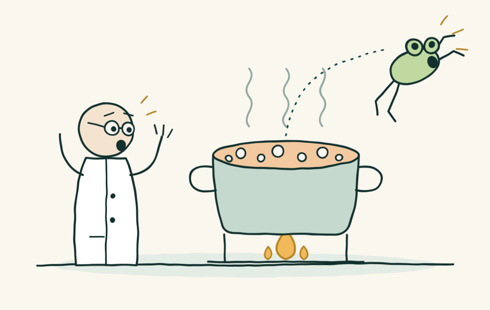
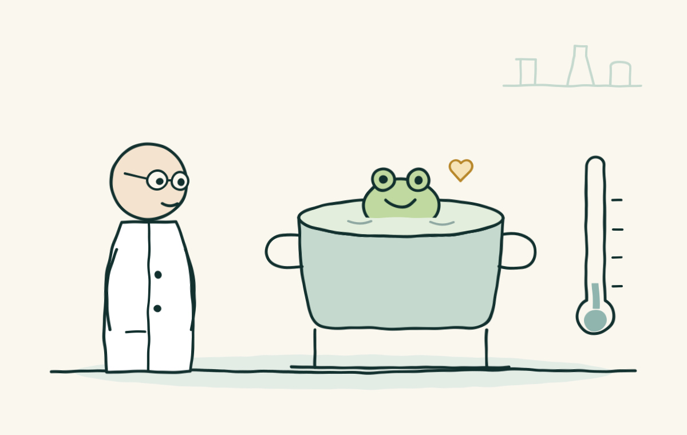
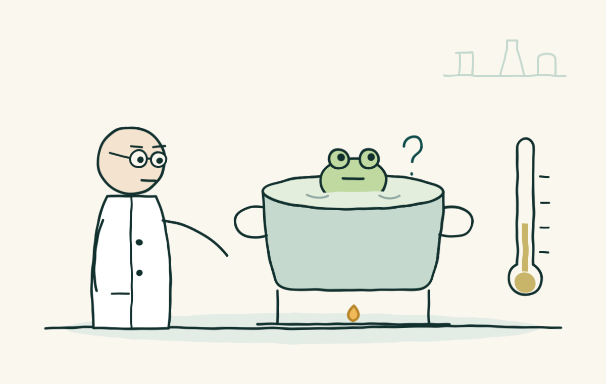
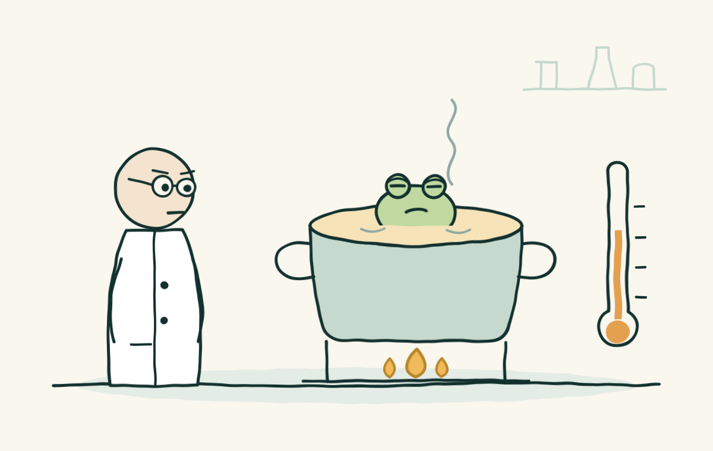
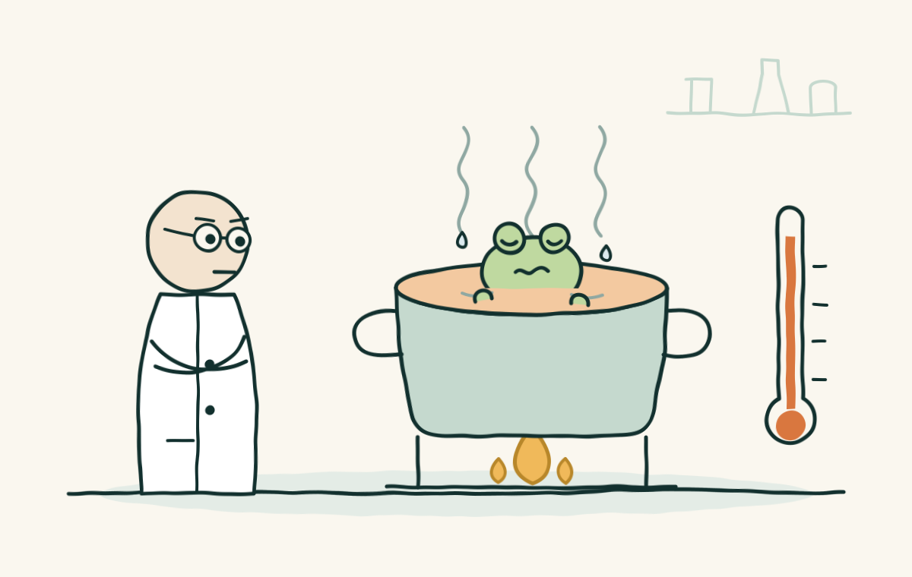
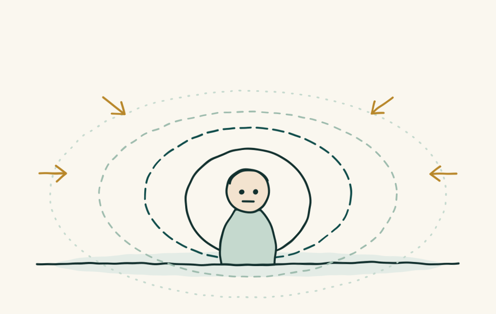
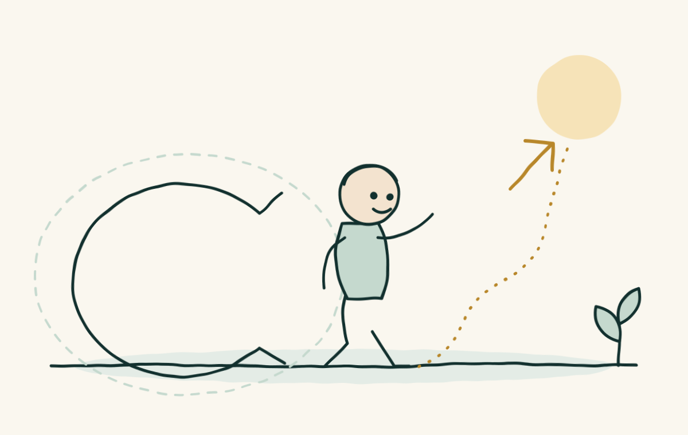

Stories · Story 1
The boiling frog
How small changes turn into traps you cannot see.
You have probably heard this one. It is an old story, and it is not really about frogs.

Danger was obvious
A scientist once put a frog next to a pot of boiling water. The moment the frog felt the heat, it jumped away and saved itself.
No thinking needed. When danger is loud, you move.

Then came comfort
So the scientist tried something different. He placed another frog in lukewarm water. It felt safe. It felt nice. So the frog stayed.

The first small change
Then he lit a small flame. The heat began to rise, so gently that the frog saw no reason to leave. It noticed the difference. But the danger did not feel urgent.
Not every trap looks dangerous at the beginning. Some feel almost comfortable.

Adjustment replaced action
As the water grew warmer, the frog simply adjusted. Every new temperature became its new normal. It sensed the change, yet it kept waiting for a clearer warning.

Too weak to jump
By the time the danger was obvious, the frog’s strength was already gone.
The danger did not arrive in one moment. It built up in moments that were easy to excuse.

From the story to your life
This is how you lose ground in real life too. It rarely starts with one huge demand. It starts with small limits, small fears and changes that look harmless.
- A job that asks for a little more of your evening each month.
- A relationship where the things you “can’t” say keep growing.
- A habit that takes ten more minutes of your day every week.
- Anyone who wants control over you and takes it one small step at a time.
Each new limit feels only slightly worse than the last, so you learn to live around it. Then one day you see how much freedom you gave away, and how normal the trap had started to feel.
Why slow change is so easy to miss
Four ordinary habits of the mind work together here.
- You get used to things
- Psychologists call this habituation. The more often you meet something, the less you notice it. What once felt uncomfortable starts to feel ordinary.
- Your baseline moves
- You judge today against yesterday, not against where you started. Small shifts can move the whole standard without you seeing it.
- Staying feels safer
- This is status quo bias. Leaving takes effort and brings uncertainty. Staying feels easier, even while things get worse.
- Boundaries wear down
- When a small line is crossed and nothing is said, the new line starts to feel acceptable. Then it moves again.
One honest note: this is a story, not a science experiment. Real frogs tend to jump out when the water gets too warm. The lesson is about people. Slow, harmful change can slip past our attention.
Five questions worth asking
This is your own temperature check. Write one sentence for each. Things get clearer when a vague discomfort becomes specific words.
- What discomfort have I started calling “normal”?
- Which boundary has moved little by little?
- Am I staying because it is healthy, or because change feels difficult?
- What would the me of one year ago notice right away?
- What is one small thing I can do today to get a choice back?
Write your answers in the brain dump

Notice. Name. Act.
Awareness is not fear. It is the ability to compare where you are now with where you began, and to act while you still have the strength and the freedom to choose.
Pay attention to what is becoming normal.